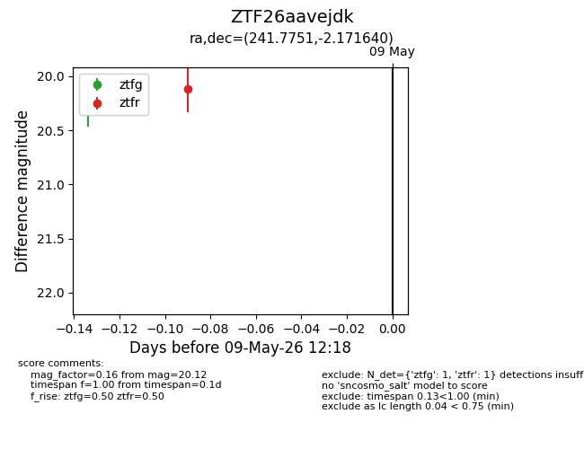
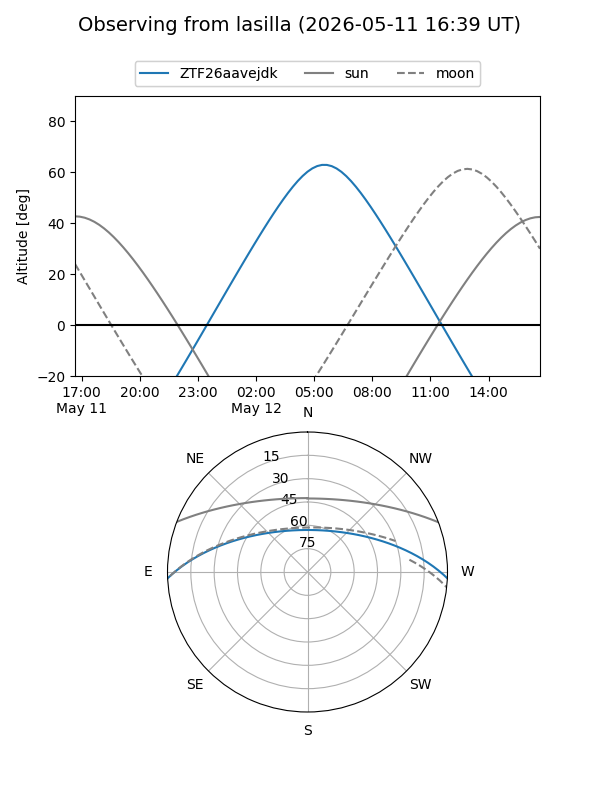
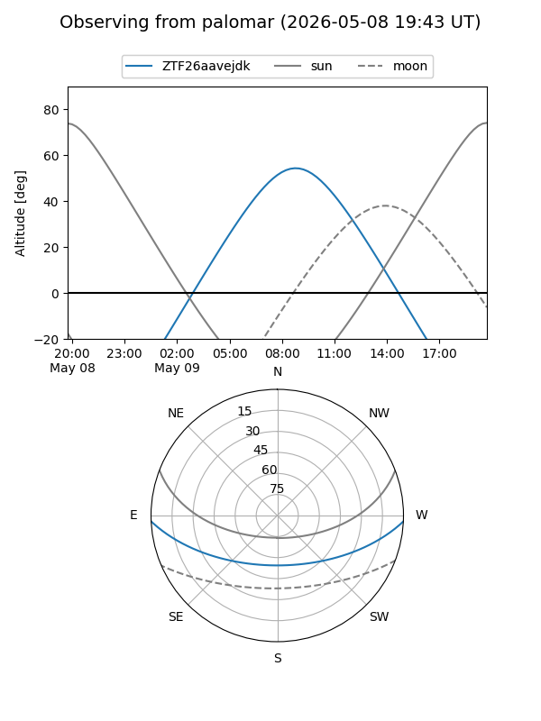

ZTF26aavejdk
Target ZTF26aavejdk at 2026-05-09 12:19
Aliases and brokers:
FINK: link
Lasair: link
ALeRCE: link
alt names
ZTF26aavejdk (ztf,fink_ztf)
Coordinates:
equatorial (ra, dec) = 241.7751,-2.17164
equatorial (HMS+DMS) = 16:07:06.03,-02:10:17.90
galactic (l, b) = (9.0704,+34.55339)
Flags:
Photometry:
last ztfg=20.29, ztfr=20.12
1 ztfg, 1 ztfr detections
Lightcurve

Visibility


Additional plots